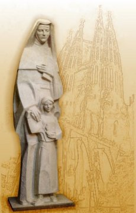

Pelos seus m�ritos, foi glorificada pela Igreja, a fim de que o seu
modelo servisse de exemplo a humanidade de todas as gera��es.
Pelos seus m�ritos, foi glorificada pela Igreja, a fim de que o seu
modelo servisse de exemplo a humanidade de todas as gera��es.
"NO BRASIL"
No ano de 1936
a Companhia de Maria chegou ao Brasil. Eram dois grupos de Irm�s espanholas,
cheias de entusiasmo e ansiosas em estabelecer a Companhia de Maria em nosso
pa�s.
O primeiro grupo se estabeleceu no interior do Estado de S�o Paulo, e o segundo
no Rio de Janeiro.
Na verdade, o destino do primeiro grupo s� foi decidido ao longo da viagem do navio, que saiu de Roma, passou pela Espanha e ia aportar na Argentina. Acontece que nesse barco estava um Bispo brasileiro que, atra�do pelo ardor mission�rio daquelas jovens religiosas, convidou-as a permanecer na sua Diocese no interior de S�o Paulo. Assim, no dia 19 de junho de 1936, entre alegria e surpresa, a cidade de Santa Cruz do Rio Pardo, em S�o Paulo, recebeu as primeiras Irm�s da COMPANHIA DE MARIA que desembarcaram no Brasil.
Meses depois, no dia 18 de outubro de 1936, chegou o segundo grupo de Irm�s espanholas, que se estabeleceram no bairro do Graja�, no Rio de Janeiro. A funda��o no Rio teve muitas dificuldades, mas no dia 30 de maio de 1937, atrav�s do N�ncio Apost�lico, a funda��o se confirmou. "DEUS reservou o Graja� para a COMPANHIA DE MARIA", disse o Cardeal Dom Sebasti�o Leme, na celebra��o inaugural.
Nada constituiu obst�culo intranspon�vel para aquelas Irm�s portadoras do dinamismo e do Carisma de Santa Joana de Lestonnac, Fundadora da Ordem da COMPANHIA DE MARIA NOSSA SENHORA. E assim, as Comunidades brasileiras cresceram e continuam a crescer, com a mesma determina��o da sua Fundadora.
Atualmente no Brasil existem sete (7) Casas da Companhia de MARIA, localizadas no Rio de Janeiro, S�o Paulo e Minas Gerais.
�LTIMAS PALAVRAS
Joana de Lestonnac foi
uma mulher virtuosa que efetivamente colaborou para o engrandecimento da
Cristandade. Pelos seus m�ritos, foi glorificada pela Igreja, a fim de que o seu
modelo servisse de exemplo a humanidade de todas as gera��es.
Em todas as ocasi�es, nos diversos e variados acontecimentos da sua exist�ncia, se deixou ser conduzida por DEUS, para al�m de seus pr�prios desejos, �s vezes sendo surpreendida pela emo��o e alegria de um acontecimento jubiloso, outras vezes pelo abatimento de um fracasso, mas sempre iluminada pela Luz salvadora, que envolvendo a sua mente, permitia-lhe vislumbrar nos fatos, a interven��o Divina.
E a partir desta experi�ncia, compreendeu a miss�o de sua vida, de estender a m�o a uma juventude feminina em perigo, por causa da pr�pria ignor�ncia, diante de um mundo em revolta, atacado por violentas transforma��es.
Com m�o firme e decidida assumiu a todas as variantes do seu ideal, priorizando igualmente o ser e o fazer, assim como a contempla��o e a a��o, que na realidade se fundiram no seu cotidiano, numa busca incessante do DEUS que � PAI, que veio at� n�s atrav�s do Seu FILHO NOSSO SENHOR JESUS CRISTO, numa sublime e redentora miss�o de Amor, e que nos concedeu a Sua Querida M�E, um precioso e inigual�vel presente, um verdadeiro dom especial, o melhor de todos afinal. E assim, para muito al�m dos espa�os e dos tempos de ora��es e atividades, Joana contemplou fervorosamente e venerou com hiperdulia MARIA, NOSSA SENHORA, esta maravilhosa mulher, cujo modelo ensinou-nos a viver como Ela viveu, no sil�ncio do amor e no servi�o dedicado unida carinhosamente ao seu Divino FILHO, na vida e no cumprimento da Sua Miss�o Existencial.
NOSSA SENHORA ser� sempre para Joana, e para a sua Organiza��o Religiosa, a presen�a inspiradora que vai al�m de lhe ensinar, tamb�m a enfrentar e percorrer os seus pr�prios caminhos ao longo da hist�ria.



"CONVITE"
Este Site foi constru�do pelo Apostolado dos Sagrados Cora��es. Clique aqui ou num dos endere�os abaixo para visitar o nosso PORTAL. Nele encontrar� uma apreci�vel quantidade de Sites, todos eles fundamentados na Sagrada Escritura, na Tradi��o Crist�, nas Manifesta��es Sobrenaturais e na Vida e Obra dos Santos. S�o Sites sobre o CRIADOR, o ESP�RITO SANTO, JESUS DE NAZAR�, sobre NOSSA SENHORA, os ANJOS DO SENHOR e Sites que descrevem a trajet�ria existencial de diversos SANTOS.
http://www.apostoladosagradoscoracoes.com/
http://www.angelfire.com/sc3/ministro/index.html
http://jusan.tripod.com/index.html
http://apostled.tripod.com/index.html

"E-MAIL"
Desejando se comunicar conosco, por gentileza, utilize o E-mail abaixo:


FIRMAS QUE DIVULGAM O SITE